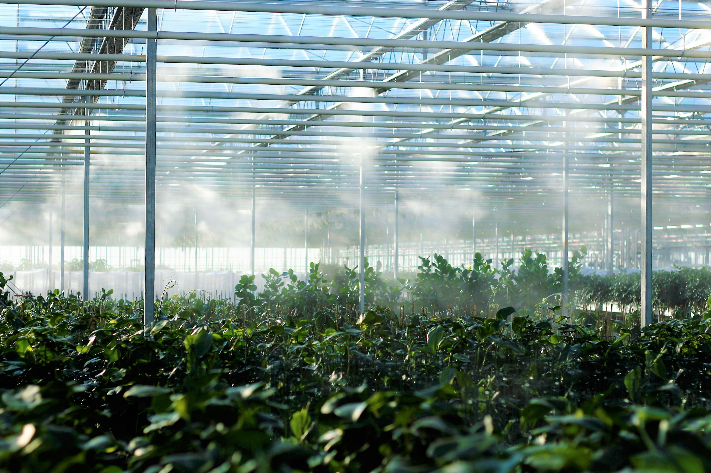

Grow with Confidence
Sprout & Grow is a greenhouse nursery in Raleigh, NC, specializing in high-quality organic plants. The nursery provides customers with a diverse selection of carefully nurtured plants that promote sustainable gardening practices and environmental stewardship.
Sprout & Grow welcomes home gardeners, urban growers, educators, and environmentally conscious individuals seeking sustainable gardening solutions. Whether you’re starting a backyard garden or building a small indoor green space, Sprout & Grow offers expert guidance and education to help you cultivate thriving organic gardens.
Learn more about sustainable gardening practices at the EPA sustainable gardening resource .